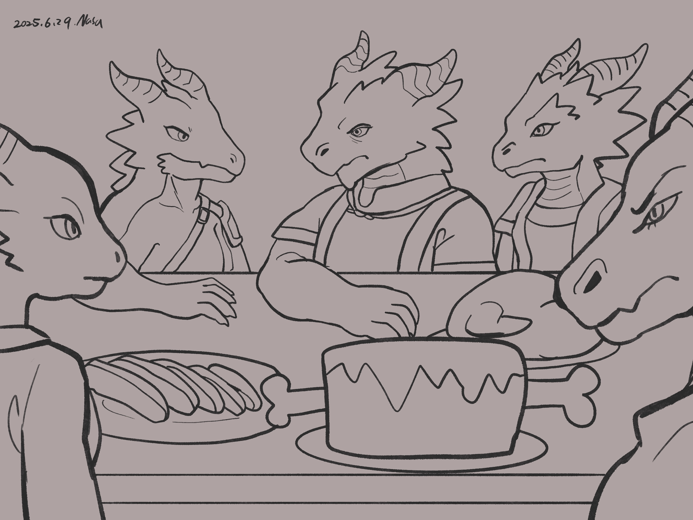
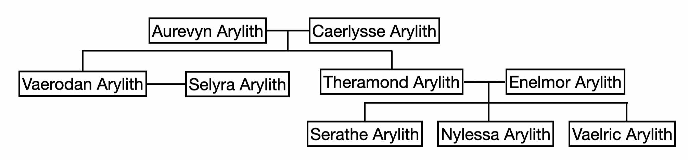

Chapter 1: Lunch with the 艾瑞利斯s
Heir to Rathanad


Heir to Rathanad
15049.05.01
從土城，加入了瑪莉貝爾的冒險者們花了一個月左右的時間，乘坐綠先生駕駛的馬車，終於抵達了拉撒拿。
拉撒拿是一座建立在山丘上的城鎮，走入入口後，便是一路向上的緩坡，而最接近天際之處，是一座宏大的宅邸。冒險者們一眼望去，除了他們之外，舉目皆是龍人。
想著從父母手上拿到的信件，阿龍意識到自己是以「貴族」、「王子」的身份，回到拉撒拿，讓他興奮不已。然而，身為龍人的他，卻不諳龍語，因此只能透過普通語，嘗試和「他的子民們」分享他的喜悅。阿龍的行為，卻只換得當地龍人的碎語（唯一聽得懂龍語的雷雅，可以聽得出來，阿龍得到的回應，盡是覺得他是白痴、瘋子）。不久後，他們也才發現，其實這裡的龍人們多數都是懂普通語的，也讓大家稍微鬆了一口氣。
隨著夜色漸黑，冒險者們決定還是得先找個下榻的地方。他們找了附近的一間酒館，拉了兩張桌子坐下，準備開始點餐。這裡的餐點似乎主要以肉類為主，佐以麵包，而不知道是酒館的關係還是拉撒拿當地的特性，酒類只有啤酒而已，但也是有不同款式的啤酒可以做選擇。
冒險者們發現了不遠處的一張桌子，有一名龍人引起了他們的注意。那是一名角不對稱的老年龍人，喝著酒，說話顛三倒四，而他身邊則是一隻看起來舉止優雅的中年銀色龍人。冒險者們想起阿龍信中那名斷了角的老僕人，莫非，這就是他？
在與這兩名龍人攀談後，冒險者們邀請他們加入他們的座位，並請他們喝了酒。老年龍人自我介紹名為尼克索，或是大家喜歡稱呼他的方式，老尼克索，而他旁邊的則是在拉撒拿唯一一家魔法商店當老闆的哈洛・米佐。阿龍心急地掏出那塊他父母交給他的龍角，嘗試對著老尼克索的角進行比對，而老尼克索也認了出來，那便是他快二十年前折斷的那支角。
「少爺，你終於回來了！」
阿龍拚命詢問老尼克索與哈洛關於自己的事。他得知，這裡的領導者，被稱為「龍冠」的存在，是艾瑞利斯家族，而他是艾瑞利斯現任龍冠唯一的子嗣，卻也的確是被他父母拋棄的孩子。他甚至有個自己的名字，賽拉尼爾・艾瑞利斯。
阿龍焦急著自己該怎麼做。他對於自己的繼承權並沒有太大的渴望，但他的確想見見這兩名當初將他拋棄的父母。同時，他也更希望這個以魔法為傲的家族，有辦法幫他追蹤到他苦覓不得的佩妮與大奧斯。比起自己，這件事似乎成為了他冒險主要的驅動力。
老尼克索鼓吹阿龍明天去見見他的家人，但瑪莉貝爾希望阿龍不要馬上答應。他認為太輕易的相信這兩名剛認識的陌生人，不一定是件好事。哈洛提議，冒險者們可以想想，如果要的話，明天早上到他在中城區的魔法商店找他，他在帶大家去接老尼克索，大夥兒在一起去見艾瑞利斯家。
阿龍也透過哈洛，得知現在艾瑞利斯家除了他的父母外，他的叔叔一家也住在那，包含他的叔叔、嬸嬸、堂姐、堂妹，以及堂弟。而當然，他們一家也都會魔法。
不久後，哈洛攙扶著酒醉的老尼克索走出了酒館，冒險者們則紛紛和酒館老闆付了住宿的錢，上樓休息了。瑪莉貝爾堅持自己一間，寧可多花一些錢，來得到一些獨處的時間。
「我有兩對父母，但一對不是親生的，一對把我拋棄了，跟你沒有父母好像也差不多欸！」
阿龍試圖透過開玩笑來和瑪莉貝爾拉近距離，但很顯然的，他沒有發現自己只是讓瑪莉貝爾更傷心了。
15049.05.02
一早，瑪莉貝爾就來到一樓用早餐，也利用冒險者們還沒下來前，繼續寫他的筆記本。但冒險者們一旦出現，他便將筆記本收好，裝作沒事一樣。
冒險者們吃完早餐，便出發尋找哈洛的魔法商店。
商店內除了哈洛外，沒有其他人。哈洛輕輕微笑，歡迎著冒險者們。雖然他曾說他的東西都不太貴重，只是花俏的小玩意，但冒險者們看到標價後，發現多數的東西都是他們合資也買不起的。最終，在他們詢問哈洛後，哈洛搬出了一大桶的魔法小石頭，價格稍微可以接受些，但這些石頭的功效為和，冒險者們還是摸不著頭緒，甚至當雷雅嘗試偵測魔法時，還發現他的偵測被阻擋住了。哈洛表示，這是他之前和其他商人買的，他也不知道這些石頭的功效。裡面各種大小、材質、顏色、形狀，也許每一顆的功效都不同。最終，哈洛決定讓冒險者們一人挑選一顆，作為他的小禮物。
阿龍挑了一顆綠色的石頭，不清楚他的功效，於是他決定將石頭含在嘴裡。將石頭取出後，他還是不知道到底發生什麼事，但很顯然他的夥伴們都發現了什麼。很快的，他們便告訴他他的聲音變得極度高亢，像是吸了氦氣一樣。阿龍知道他不能以這樣的狀態去拜訪艾瑞利斯家。
鑰挑了一顆顏色混濁，形狀像是海膽的石頭。他搖了搖石頭，突然聽見裡面傳來一個人聲，好像是打招呼，於是他也應了一聲招呼，卻發現自己的聲音也被存了進去。他仔細收好這顆石頭，心想著也許未來有用。
其他冒險者們各自取了不同的石頭，但都決定先收好，不使用他們，以免這些石頭一旦使用就不能再用第二次了。
在老尼克索未妥善整理的房子前，哈洛請冒險者們稍等，讓他進去找老尼克索。等他出來時，老尼克索已經將自己打理地十分體面，準備出發了。然而，阿龍的氦氣嗓音還沒消除，也不確定會持續多久，於是老尼克索邀請他們先進去坐坐。
接近一小時的時間，阿龍終於在瑪莉貝爾的提示下，得知自己的嗓音恢復了，大家也就出發了。
走上山坡，偌大的宅邸在眼前越來越大。而除了艾瑞利斯家之外，這裡也還有其他的貴族，但房子沒有這麼宏偉。上城區除了這些貴族的家之外，還有一處議會廳，是龍冠辦公的地方。
由於抵達時已屆中午，老尼克索建議直接拜訪艾瑞利斯的宅邸。他敲了敲門。不久後，一名藍色，中老年的女性龍人開了門。阿龍眼神對上，用普通語喊了一句「媽媽」。這名龍人瞪大眼睛，回了一句「賽拉尼爾？」他先禮貌地邀請冒險者們入門，讓他們在客廳休息，然後要冒險者們等一會兒，他得去找「阿龍的父親」出來。
毛毛維持他的老習慣，在這貴族的客廳看看有沒有什麼值錢的東西。但縱使所有擺設都是非常華貴得，唯一吸引他注意的，是艾瑞利斯的家譜。

費洛登和瑟萊拉沒有意外就是阿龍的父母吧？那空白的位置，似乎缺少個名字。好像是「賽拉尼爾」來著？
不久後，當阿龍的母親瑟萊拉自己回來時，他邀請冒險者們一同與他們共進午餐。
餐廳擺了兩張長桌，一桌已經坐了快滿，桌上的飯菜也擺好了，另一桌則是空的。瑟萊拉邀請阿龍加入主桌，也請其他人們坐在一旁的客桌。等大家都入座後，主桌那幾名阿龍的平輩，很顯然是他的堂姐妹弟便到廚房幫忙將餐點端上客桌上。
阿龍的家人們紛紛自我介紹或互相介紹。他的父親，現任的龍冠名為費洛登是一名紅龍人，表情嚴肅但不嚴厲，歲月在他的臉上留下不少痕跡；費洛登對面的是他的叔叔，紅龍人瑟拉蒙，他們倆兄弟長得挺像的，但瑟拉蒙比較爽朗親切一點，阿龍仔細觀察他，感覺他不太像那種別有心機的人；瑟拉蒙一旁的是阿龍的嬸嬸黃銅龍人艾內莫，十分低調，有著貴族的典雅；坐在艾內莫旁邊的是一名與他身形相當的年輕紅龍人，他的堂姐瑟拉斯，眼神充滿殺氣，毫無友善可言；與瑟拉斯對比，一旁的堂妹紅龍人奈梨紗則友善親人，甚至主動伸出手與阿龍握手，表示自己十分熱愛藝術；最後則是阿龍的堂弟，黃銅龍人維瑞克，依照奈梨紗的說法，是在場所有家人當中最最聰明的人。而用餐的過程中，冒險者們也發現阿龍的堂妹奈梨紗似乎與哈洛有些私交，奈梨紗時常跑來客桌與哈洛攀談。
待用完餐後，費洛登提及阿龍身份一事。他先向阿龍道歉，說明當初拋棄還是蛋的他，是他們的過錯，但事情都是有理由的。他也說道，這個家族以使用魔法為傲（阿龍詢問家人們是不是都會魔法，維瑞克瞬間做出了一個阿龍的小幻象作為回應）。不過，這並不會改變阿龍是他與瑟萊拉的親生骨肉，他還是有辦法讓阿龍取得他應有的權利。對此，瑟拉斯的表錢顯然有些許不滿，但也沒有無禮地在長輩面前表示些什麼。
費洛登提議，讓阿龍通過一項試煉，來取回他繼承人的身份。
城鎮外的洞穴有一頭龍。去找那頭龍，取得與他接觸過的證明。
那樣，就不會有人對他的繼承權有任何意見了。
15049.05.01
After about a month of travel from Mudtown, the adventurers, now joined by Maribel, finally arrived in Rathanad in the carriage driven by Mr. Green.
Rathanad was a town built on a hill. Once through the entrance, the road became a long upward slope, and near the very edge of the sky stood an enormous manor. At a glance, the adventurers saw that apart from themselves, everyone in sight was dragonborn.
Thinking of the letter he had received from his parents, Al-lon realized that he had returned to Rathanad as a "noble" and a "prince," and the thought thrilled him. However, though he himself was dragonborn, he did not know Draconic, so he could only try to share his joy with "his people" in Common. All this earned him was muttering from the local dragonborn. Leah, the only one who understood Draconic, could tell that most of what they were saying was that he was an idiot or a lunatic. Not long after, they discovered that most of the dragonborn here actually understood Common anyway, which made everyone relax a little.
As darkness fell, the adventurers decided they first needed a place to stay. They found a nearby tavern, pulled together two tables, and prepared to order food. The menu seemed to be mostly meat served with bread, and whether because it was a tavern or simply a trait of Rathanad, the only alcohol available was beer, though there were several kinds to choose from.
At a nearby table, one dragonborn caught their attention. He was an elderly dragonborn with mismatched horns, drinking heavily and speaking incoherently, and beside him sat an elegant-looking middle-aged silver dragonborn. The adventurers recalled the old servant with the broken horn mentioned in Al-lon's letter. Could this be him?
After talking with the two dragonborn, the adventurers invited them over to join their table and bought them drinks. The elderly dragonborn introduced himself as Nixul, or Old Nixul, as people preferred to call him, while the one beside him was Harrel Mizel, owner of the only magic shop in Rathanad. Eagerly, Al-lon pulled out the dragon horn fragment his parents had given him and tried comparing it to Old Nixul's horn. Old Nixul immediately recognized it as the horn he had broken nearly twenty years ago.
"Young master, you've finally returned!"
Al-lon desperately questioned Old Nixul and Harrel about himself. He learned that the rulers here, known as the Crown, were the Aryliths family, and that he was the only child of the current Crown, though he truly had been the child abandoned by his parents. He even had a name of his own: Cyrinel Aryliths.
Al-lon anxiously wondered what he should do. He did not especially crave his inheritance, but he did want to meet the two parents who had abandoned him. At the same time, he even more strongly hoped that this magic-proud family might be able to help him track down Penny and Big Os, whom he had failed to find. Compared to his own identity, that had become the stronger driving force behind his adventure.
Old Nixul urged Al-lon to go see his family the next day, but Maribel hoped Al-lon would not agree too quickly. She felt that trusting two strangers they had only just met so easily might not be wise. Harrel suggested that the adventurers think it over, and if they wanted, they could come to his magic shop in the middle district the next morning. He would take them to pick up Old Nixul, and then they could all go visit the Aryliths family together.
Through Harrel, Al-lon also learned that besides his parents, his uncle's family also lived in the Aryliths estate, including his uncle, aunt, older female cousin, younger female cousin, and younger male cousin. And naturally, that whole family also practiced magic.
Before long, Harrel helped the drunken Old Nixul out of the tavern. The adventurers each paid the tavernkeeper for lodging and went upstairs to rest. Maribel insisted on having a room to herself, preferring to spend more money in exchange for some time alone.
"I have two sets of parents, but one pair isn't my birth family and the other abandoned me, so that's kind of almost the same as you having no parents at all, right?"
Al-lon tried to use humor to get closer to Maribel, but very obviously failed to realize that he had only made her sadder.
15049.05.02
Early in the morning, Maribel came down to the first floor for breakfast and used the time before the other adventurers appeared to continue writing in her notebook. But the moment they showed up, she put the notebook away and pretended nothing had happened.
After breakfast, the adventurers set out to find Harrel's magic shop.
There was no one in the shop besides Harrel himself. With a slight smile, he welcomed the adventurers inside. Although he had claimed his wares were not very valuable, merely fancy little curiosities, once the adventurers saw the prices, they realized that most of the items were beyond what even pooling their money together could buy. In the end, after they asked Harrel further, he brought out a large barrel full of tiny magical stones. These were somewhat more affordable, but the adventurers still had no idea what any of them actually did. When Leah tried to detect magic on them, she discovered that her detection was blocked. Harrel explained that he had bought them from another merchant and had no idea what their effects were either. The stones varied in size, material, color, and shape, and perhaps each one did something different. In the end, Harrel decided to let each adventurer choose one stone as a small gift.
Al-lon picked a green stone. Since he had no idea what it did, he decided to put it in his mouth. After taking it back out, he still had no idea what had happened, but clearly his companions noticed something. They soon told him that his voice had become absurdly high-pitched, as though he had inhaled helium. Al-lon knew he could not visit the Aryliths family sounding like that.
Kaname chose a murky-colored stone shaped like a sea urchin. She shook it and suddenly heard a voice inside, sounding as though it were greeting her. So she answered with a greeting of her own, only to discover that her voice had been recorded into it as well. She carefully put the stone away, thinking it might prove useful in the future.
The other adventurers each picked different stones, but all decided to store them away without using them, in case using them once meant they could never be used again.
Outside Old Nixul's poorly kept house, Harrel asked the adventurers to wait while he went inside to fetch him. When he emerged again, Old Nixul had made himself quite presentable and was ready to leave. However, Al-lon's helium-like voice still had not faded, and since nobody knew how long it would last, Old Nixul invited them to come inside and sit for a while first.
After nearly an hour, Al-lon finally realized, thanks to Maribel pointing it out, that his voice had gone back to normal, and so they set out.
As they climbed the hill, the vast estate before them grew larger and larger. Besides the Aryliths family, there were other nobles in this district too, though their houses were not nearly so grand. In the upper district, alongside these noble homes, stood a council hall where the Crown conducted official business.
Since it was already around noon when they arrived, Old Nixul suggested going straight to the Aryliths estate. He knocked on the door. Not long after, a blue, middle-aged female dragonborn opened it. Al-lon met her eyes and said in Common, "Mother." The dragonborn widened her eyes and replied, "Cyrinel?" She politely invited the adventurers inside first and had them rest in the drawing room, then asked them to wait a moment while she went to fetch "Al-lon's father."
Fur maintained his usual habits and looked around the noble drawing room to see whether there was anything valuable. Yet despite every furnishing being luxurious, the one thing that truly caught his attention was the Aryliths family tree.
So Vaerodan and Selyra must be Al-lon's parents, then? And that blank space seemed to be missing a name. Something like "Cyrinel," perhaps?
Not long afterward, when Al-lon's mother Selyra returned on her own, she invited the adventurers to dine with the family.
The dining room held two long tables. One was already nearly full, with the food already laid out, while the other stood empty. Selyra invited Al-lon to join the main table and asked the others to sit at the guest table beside it. Once everyone had taken their seats, the younger relatives around Al-lon's age at the main table, clearly his cousins, went to the kitchen to help carry dishes over to the guest table.
Al-lon's family members introduced themselves, or introduced one another. His father, the current Crown, was a red dragonborn named Vaerodan, stern-faced but not severe, with many marks of age on his features. Across from Vaerodan sat Al-lon's uncle, a red dragonborn named Theramond. The two brothers looked quite alike, though Theramond seemed more cheerful and approachable. After observing him carefully, Al-lon felt that he did not seem like the sort of person with hidden ulterior motives. Beside Theramond sat Al-lon's aunt, a brass dragonborn named Enelmor, quiet and possessed of noble elegance. Next to Enelmor sat a young red dragonborn of similar build, his older female cousin Serathe, whose eyes were full of hostility and held no friendliness at all. In contrast, his younger female cousin, the red dragonborn Nylessa, was friendly and outgoing. She even took the initiative to shake Al-lon's hand and said that she loved art. Finally there was Al-lon's younger male cousin, a brass dragonborn named Vaelric, whom Nylessa described as the smartest person in the family. During the meal, the adventurers also noticed that Nylessa seemed to know Harrel personally, since she often came over to the guest table to chat with him.
After the meal, Vaerodan raised the matter of Al-lon's identity. He first apologized to Al-lon, explaining that abandoning him while he was still an egg had been their fault, though there had been reasons for it. He also explained that this family took pride in its magical talent. When Al-lon asked whether everyone in the family knew magic, Vaelric instantly replied by conjuring a tiny illusion of Al-lon. Even so, that did not change the fact that Al-lon was the biological child of Vaerodan and Selyra, and Vaerodan said he still had a way to ensure that Al-lon could reclaim the rights that should have been his. At this, Serathe's expression showed a trace of displeasure, though she did not say anything rude in front of her elders.
Vaerodan proposed that Al-lon undergo a trial in order to reclaim his status as heir.
There was a dragon in a cave outside the town. He was to find that dragon and obtain proof that he had come into contact with it.
Then no one would have any grounds to dispute his right of succession.